Practical MLOps with GitHub and Azure ML
Kevin Feasel (@feaselkl)https://csmore.info/on/mlops
Who Am I? What Am I Doing Here?


Motivation
My goals in this talk:
- Provide a brief history of [x]Ops
- Review a code-first Azure Machine Learning model
- Describe the MLOps maturity model
- Automate Azure ML pipelines with GitHub Actions
What We'll Do
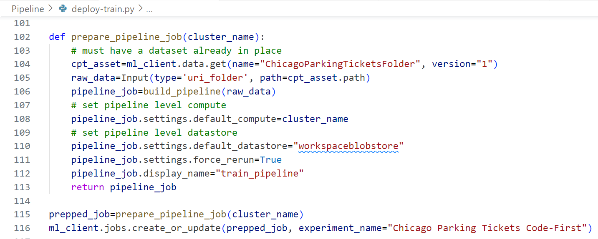What We'll Do
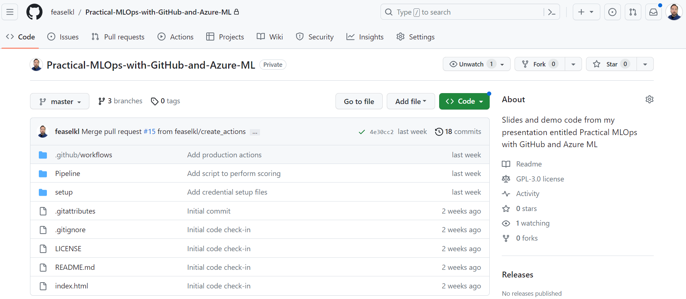What We'll Do
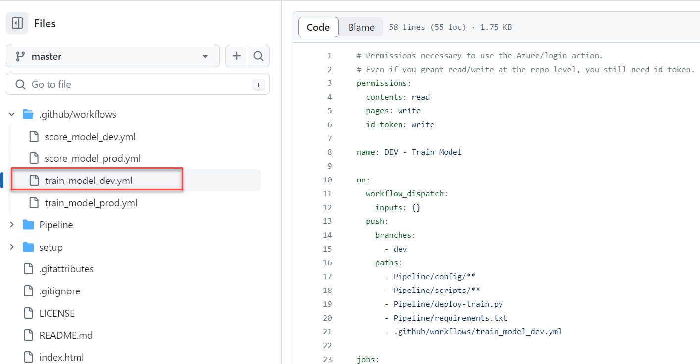What We'll Do
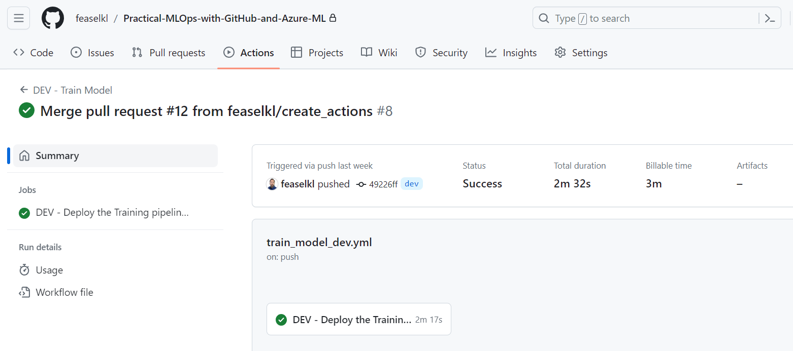What We'll Do

Agenda
- A Brief History of [x]Ops
- Review a Model
- The MLOps Maturity Model
- Connecting GitHub and Azure ML
- GitHub Actions
- Performing Model Updates
The Bad Old Days
| Developers | Administrators |
|---|---|
| Get paid to write and push code | Get paid to keep servers and systems running |
| Tasks given by product managers | Tasks given by internal IT management |
| Rarely on call | Usually on call |
| Love to deploy code on a Friday afternoon at 4:30 PM | "Love" to get paged at 3 AM and the developer is asleep or too drunk to help |
The Core Problem
Ultimately, this is an incentive alignment problem, made harder because the two groups' chains of command often meet only at very high levels.
DevOps
DevOps is a combination of people, practices, and tools, intended to solve some incentive compatibility problems between development teams and operations teams.
Key DevOps Concepts
- Continuous integration and continuous deployment
- Developers building tooling for Operations
- Developers owning and managing their deployments
- Developers and Operations collaborating closely
DevOps to DataOps
DevOps is ultimately about shipping code and related artifacts more effectively.
The next challenge is data: databases are stateful, making them harder to change.
Key DataOps Extensions
- Database code is code--make it part of source control and CI/CD
- Manage "static" or "reference" data, ideally in source control
DataOps to MLOps
If DataOps is DevOps plus data management, then MLOps is DataOps plus machine learning models.
DataOps to MLOps
 Source
Source
Key MLOps Extensions
- Managing large datasets for training
- Training, deploying, and retraining models in a CI/CD manner
- Managing trained models over time
Agenda
- A Brief History of [x]Ops
- Review a Model
- The MLOps Maturity Model
- Connecting GitHub and Azure ML
- GitHub Actions
- Performing Model Updates
Code Notes
We will use code-first Azure ML pipelines that we built in the prior talk, Getting Beyond the Basics with Azure Machine Learning (https://csmore.info/on/amlindepth).
We will only consider the code at a high level in this talk.
Demo Time
Agenda
- A Brief History of [x]Ops
- Review a Model
- The MLOps Maturity Model
- Connecting GitHub and Azure ML
- GitHub Actions
- Performing Model Updates
MLOps Maturity Models
Microsoft and Google each have MLOps maturity level models, with Microsoft's being more fine-grained. As a result, we will review the Microsoft model--though the Google one is good as well!


Agenda
- A Brief History of [x]Ops
- Review a Model
- The MLOps Maturity Model
- Connecting GitHub and Azure ML
- GitHub Actions
- Performing Model Updates
The Security Architecture

The Security Architecture
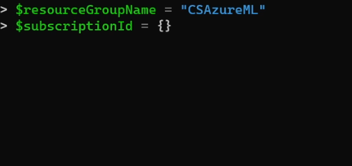The Security Architecture
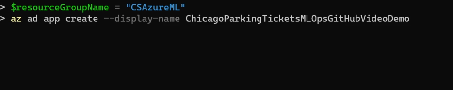The Security Architecture
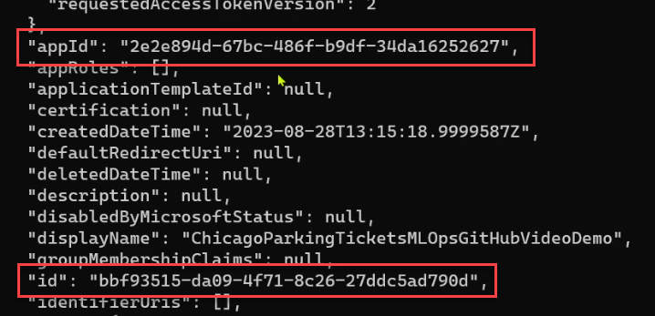The Security Architecture
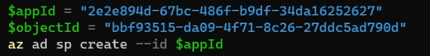The Security Architecture
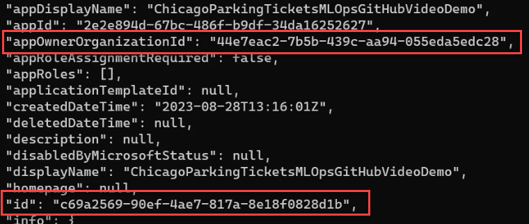The Security Architecture
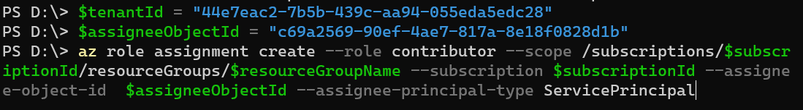The Security Architecture
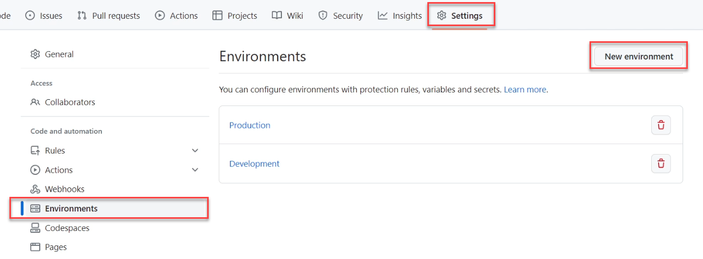The Security Architecture
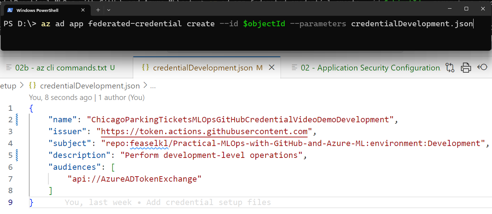The Security Architecture
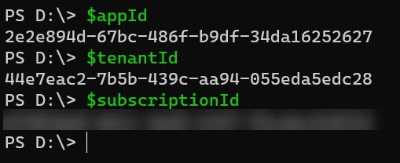The Security Architecture
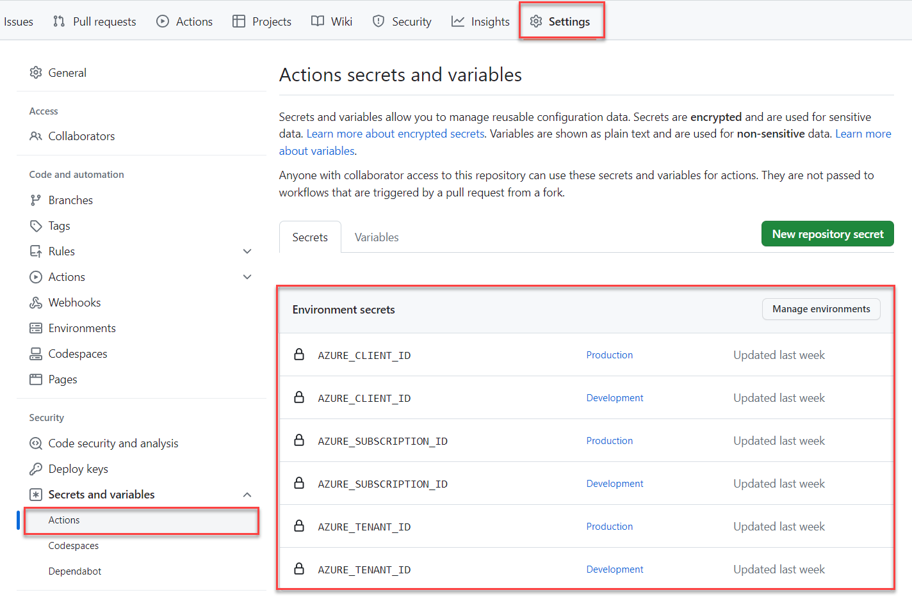Agenda
- A Brief History of [x]Ops
- Review a Model
- The MLOps Maturity Model
- Connecting GitHub and Azure ML
- GitHub Actions
- Performing Model Updates
An Overview of GitHub Actions

Demo Time
Agenda
- A Brief History of [x]Ops
- Review a Model
- The MLOps Maturity Model
- Connecting GitHub and Azure ML
- GitHub Actions
- Performing Model Updates
Branching Strategies
Before we get into performing model updates, we should briefly consider popular branching strategies.
Single Branch

Feature Branching

Environmental Branch

Release Branching

Choosing a Strategy
We will want to use environmental branching for this demo, though all four are useful (and there are other useful strategies as well!).
Key reasons:
- Dev and production releases allow for multiple workspaces
- Azure ML tracks model history, so we don't need explicit releases in GitHub
Demo Time
Wrapping Up
Over the course of this talk, we have gained an understanding of what Machine Learning Operations (MLOps) is, the MLOps maturity model, and how to use GitHub Actions to automate Azure ML pipelines.
Wrapping Up
To learn more, go here:
https://csmore.info/on/mlops
And for help, contact me:
feasel@catallaxyservices.com | @feaselkl
Catallaxy Services consulting:
https://CSmore.info/on/contact